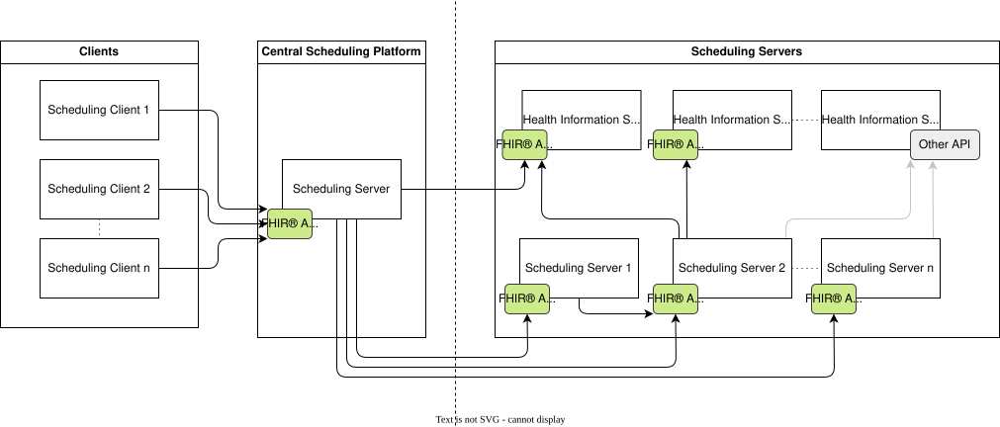
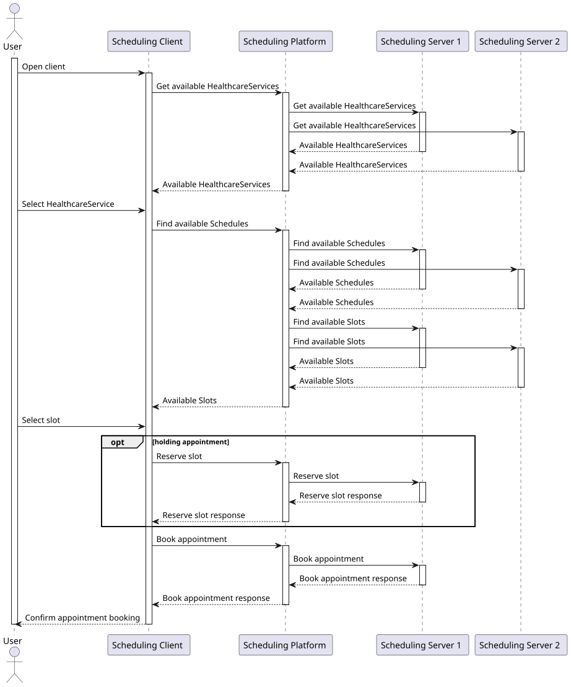
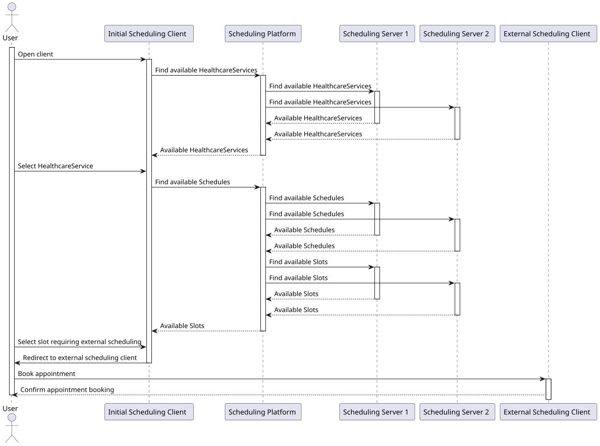

Austrian Appointment Scheduling (R5)
0.2.0 - Informative
Austrian Appointment Scheduling (R5)
0.2.0 - Informative
Austrian Appointment Scheduling (R5) - Local Development build (v0.2.0) built by the FHIR (HL7® FHIR® Standard) Build Tools. See the Directory of published versions
In this scenario one Central Scheduling Platform acts as a central Scheduling Server aggregating data from other Scheduling Servers and/or health information systems. Requests to the Central Scheduling Platform are relayed to known other Scheduling Servers. The other Scheduling Servers can either be health information systems or booking platforms which in turn access the APIs of other Scheduling Servers (either via FHIR or other APIs) in a cascading fashion. The Central Scheduling Platform aggregates search results from multiple sources for the Scheduling Client and relays requests related to Appointment booking from the Scheduling Client to the target Scheduling Server. The Central Scheduling Platform is not required to persist any scheduling-related data. While it is discouraged to persist information about currently available Slots, rarely changed information such as available HealthcareServices can be cached for a reasonable amount of time. For this scenario, the handling of associated actors of type Device, Location is subject to the internal business logic of the final Scheduling Server and is therefore out of scope of this scenario.


In some cases, a provider of a Scheduling Server might want a user to directly book with his Scheduling Client instead of via the central platform. In this case, the initial Scheduling Client redirects the user to the Scheduling Client of the provider of the corresponding Scheduling Server.
